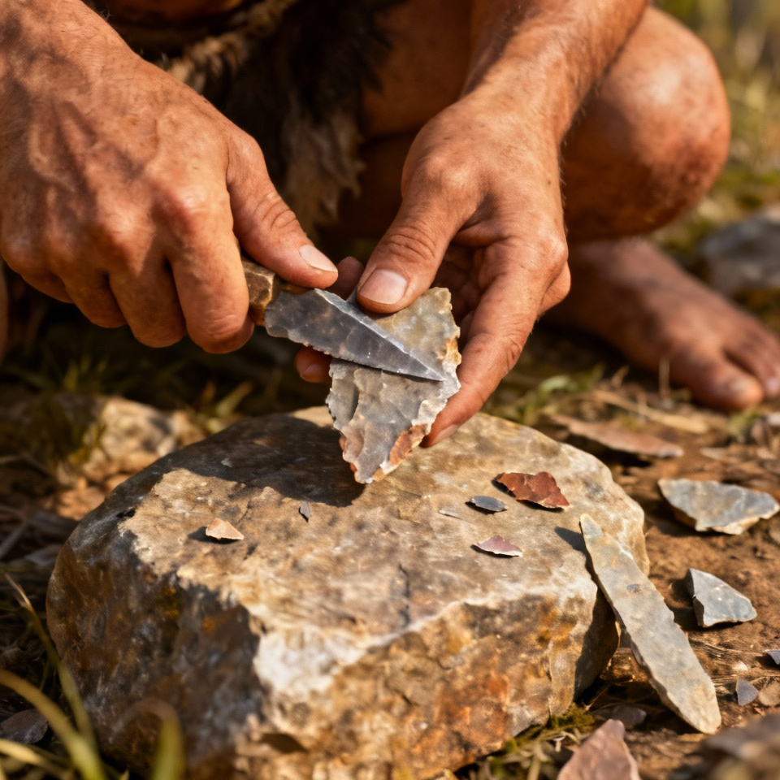
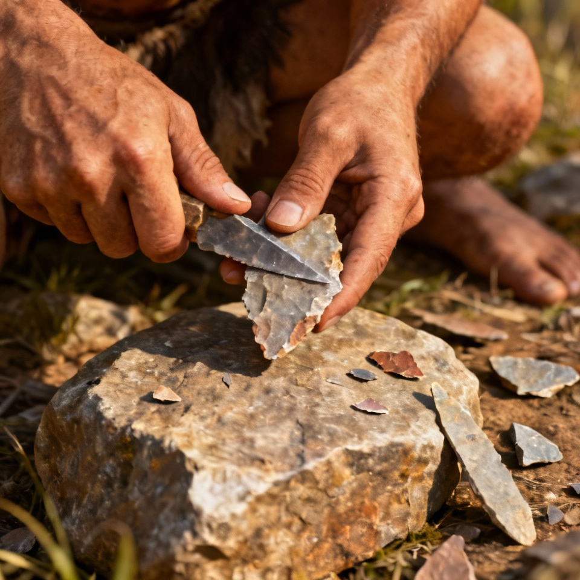
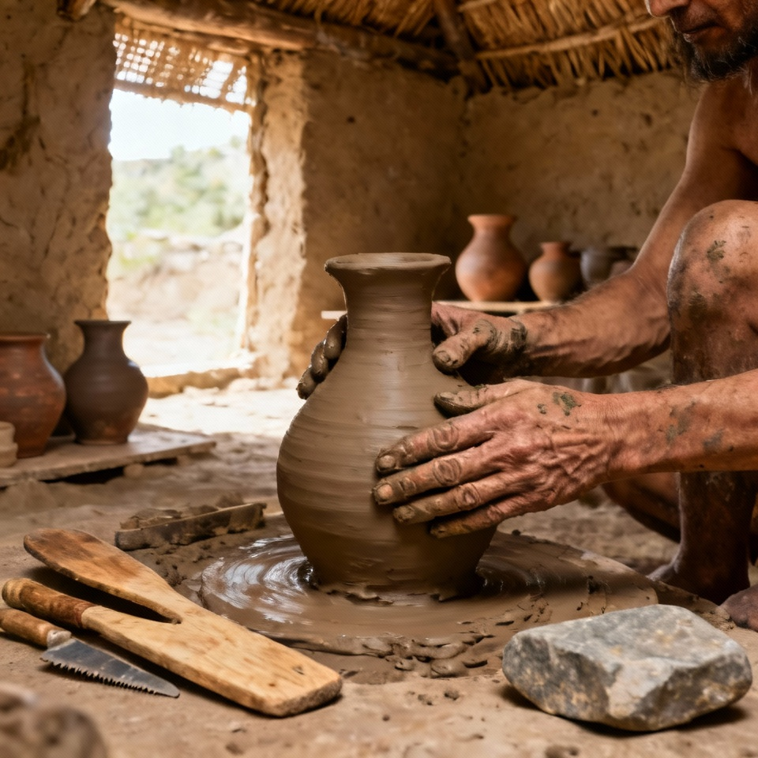
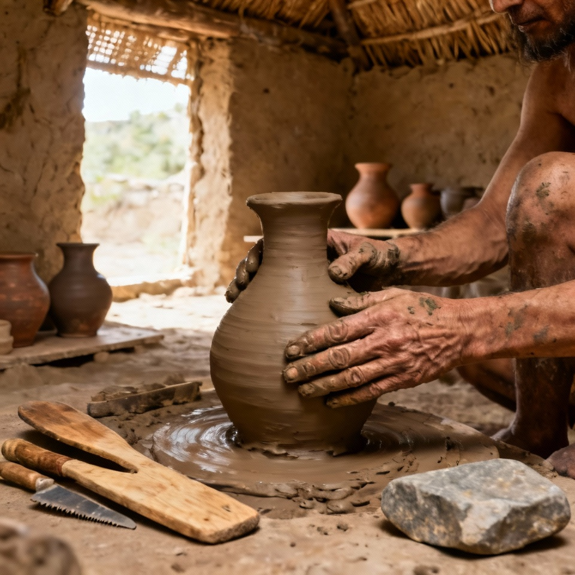

A Idade Moderna é o período histórico compreendido entre a tomada de Constantinopla pelos turcos otomanos em 1453 e a Revolução Francesa em 1789. Foi uma época marcada por profundas transformações políticas, econômicas, sociais, científicas e culturais, que romperam com as estruturas medievais e prepararam o caminho para o mundo contemporâneo. Durante a Idade Moderna, surgiram os Estados Nacionais, fortaleceu-se o poder dos reis (absolutismo), expandiu-se o comércio marítimo e ocorreram grandes avanços científicos e artísticos.
Um dos marcos iniciais da Idade Moderna foram as Grandes Navegações, lideradas por Portugal e Espanha a partir do século XV. A busca por novas rotas comerciais para as Índias levou à descoberta de novos continentes, como a América em 1492 por Cristóvão Colombo, e ao estabelecimento de colônias e impérios ultramarinos. Essa expansão marítima resultou em um intenso intercâmbio econômico e cultural, conhecido como Globalização Inicial, e na formação do mercantilismo, sistema econômico baseado no comércio, no acúmulo de metais preciosos e no fortalecimento do Estado.
 


Durante a Idade Moderna, consolidou-se o absolutismo, forma de governo na qual o rei concentrava quase todo o poder político, econômico e militar. Monarcas como Luís XIV, da França, e Henrique VIII, da Inglaterra, são exemplos de governantes absolutistas que afirmavam governar por “direito divino”. A centralização do poder, a criação de exércitos permanentes e o fortalecimento da burocracia real foram essenciais para o surgimento dos Estados Nacionais europeus, como França, Inglaterra, Portugal e Espanha.


O Renascimento foi um dos movimentos mais importantes da Idade Moderna, surgindo na Itália no século XIV e espalhando-se pela Europa. Inspirado na cultura clássica greco-romana, o Renascimento valorizava a razão, a ciência, a arte e o humanismo, colocando o ser humano no centro do conhecimento. Artistas como Leonardo da Vinci, Michelangelo e Rafael, e cientistas como Galileu Galilei e Copérnico, representaram o espírito de inovação e curiosidade dessa época, que rompeu com a visão religiosa dominante da Idade Média.
 


A Reforma Protestante, iniciada por Martinho Lutero em 1517, contestou os abusos e a autoridade da Igreja Católica, dando origem a novas denominações cristãs, como o luteranismo, o calvinismo e o anglicanismo. Em resposta, a Igreja lançou a Contrarreforma, com o objetivo de reafirmar seus dogmas e combater o avanço do protestantismo, promovendo o Concílio de Trento e fortalecendo a Companhia de Jesus (jesuítas). Esses movimentos religiosos transformaram profundamente a vida espiritual, cultural e política da Europa, dividindo o continente entre católicos e protestantes.


Entre os séculos XVI e XVII, ocorreram grandes avanços científicos e filosóficos que mudaram a maneira de compreender o mundo. A Revolução Científica, impulsionada por nomes como Isaac Newton, Kepler e Descartes, introduziu o método científico e substituiu explicações religiosas por observações e experimentos racionais. Mais tarde, no século XVIII, o Iluminismo expandiu essas ideias, defendendo a razão, a liberdade e os direitos individuais, e questionando o absolutismo e a dominação da Igreja. Essas ideias influenciariam diretamente as revoluções do final do século XVIII, especialmente a Revolução Francesa.